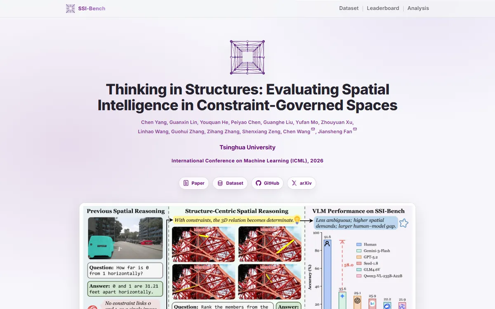

Thinking in Structures: Evaluating Spatial Intelligence in Constraint-Governed Spaces
Lavender morning light on frosted glass: a wireframe cube floats over a university-purple title and a leaderboard that blushes by model family.

Checked against the rendered page. Text colors are declared as translucent near-black; hex values are given with alpha notes. No abstract or BibTeX on the page.
Why it is here
Soft lavender gradient with a geometric logo mark, a wide teaser figure and an embedded interactive dataset viewer in card frames. It shows how to present a benchmark attractively.
Overview
Color Palette
Typography
Inter
Thinking in Structures: Evaluating Spatial Intelligence in Constraint-
Abstract · Method · Results · BibTeX — 0123456789
Spacing & Shape
Page Modules
Guidelines
More like this

CRAFT: Training-Free Cascaded Retrieval for Tabular QA
A tidy product manual in pale blueprint blue, where every stage wears its own colored edge.

Efficient Self-Evaluation for Diffusion Language Models via Sequence Regeneration
A tidy stack of rounded cards washed in a blue-violet-apricot dawn, signed with a gradient wordmark.

FIGMA: Towards FIne-Grained Music retrievAl
A music journal on warm paper: a heavy Newsreader headline under a red kicker, big red serif numerals for the results, and figures resting in soft cream frames.

GuideDog: A Real-World Egocentric Multimodal Dataset for Blind and Low-Vision Accessibility-Aware Guidance
A quiet monograph page: one serif column, oxblood ink for the links, and a table that blushes only at its own row.

LaMI: Augmenting Large Language Models via Late Multi-Image Fusion
A careful conference handout: Noto Serif headings, navy outlined buttons and soft grey bands taking turns.

PairCoder++: Pair Programming as a Universal Paradigm for Verified Code-Driven Multimodal and Structured-Artifact Generation
A crisp white product page: a blue announcement strip, ink-black pill buttons and every figure on a soft-shadowed card.